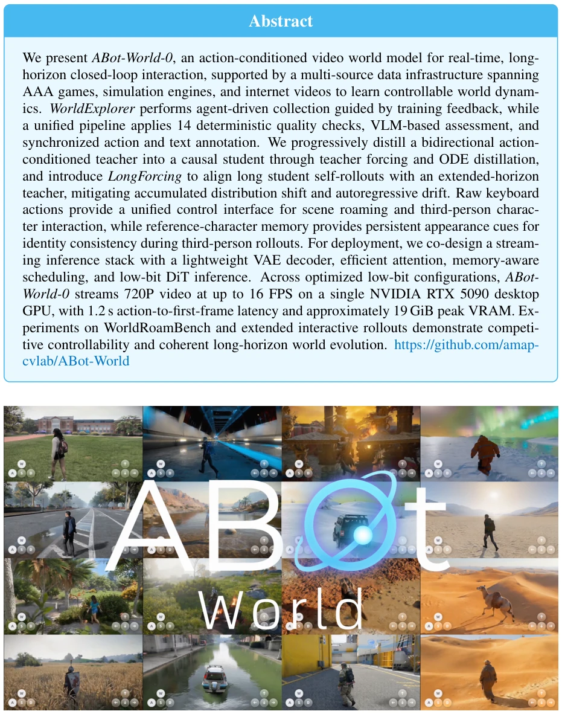
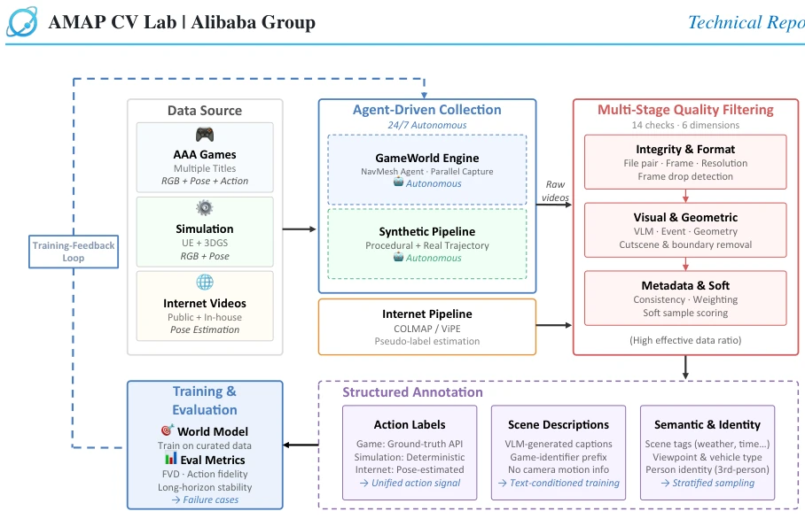
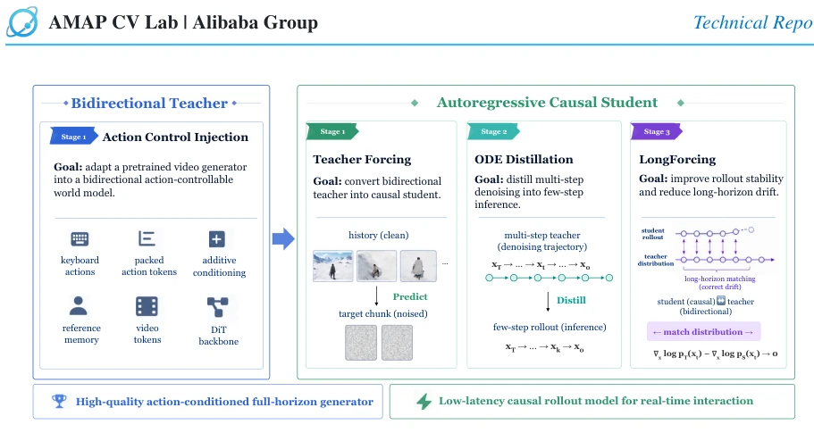
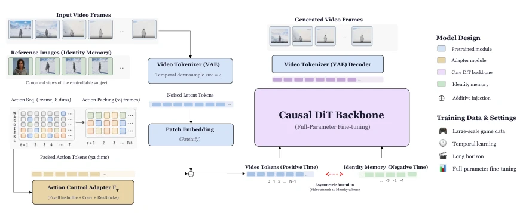
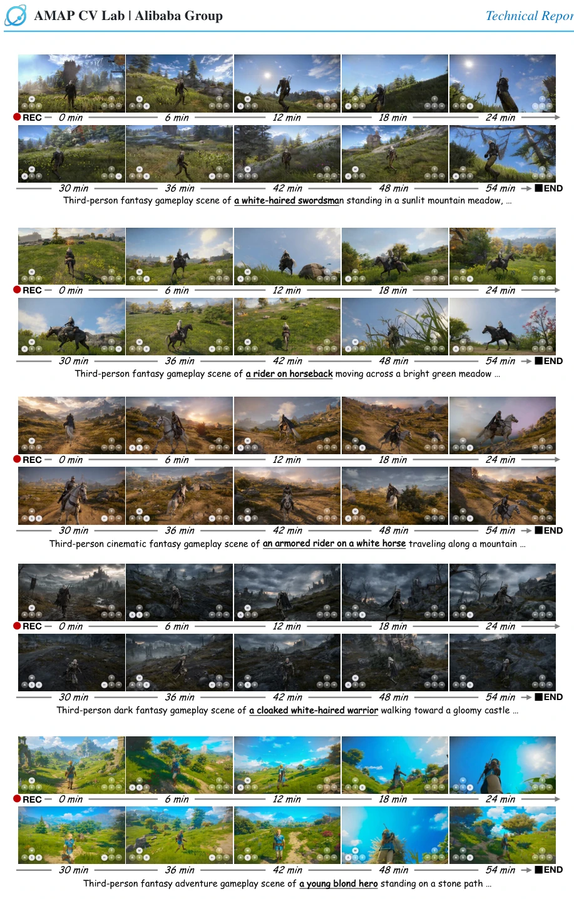
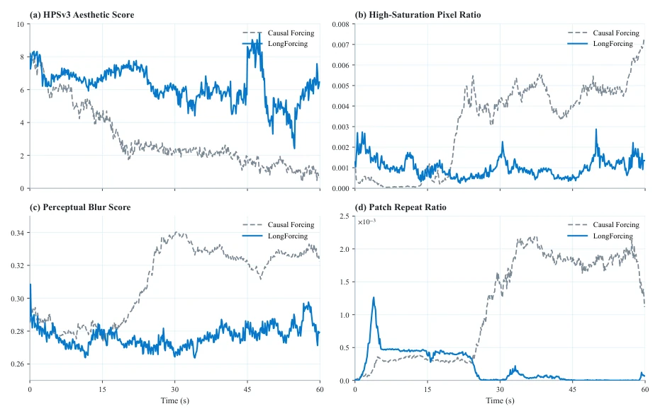
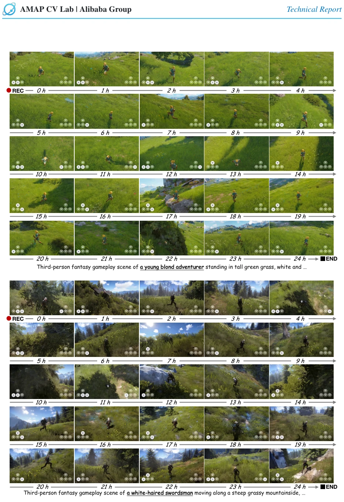
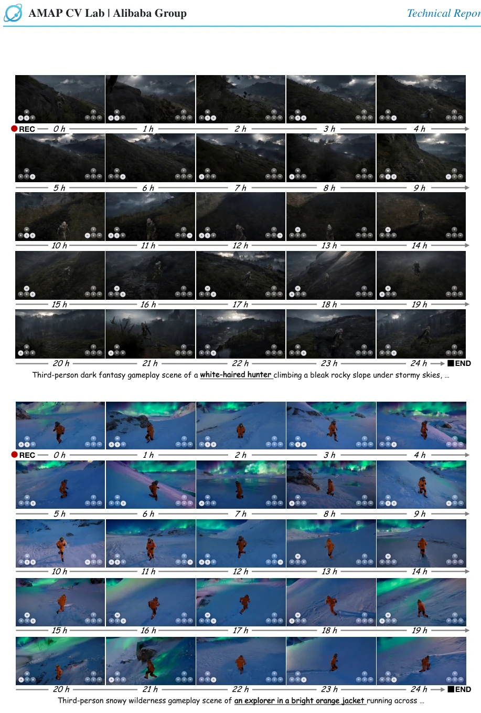
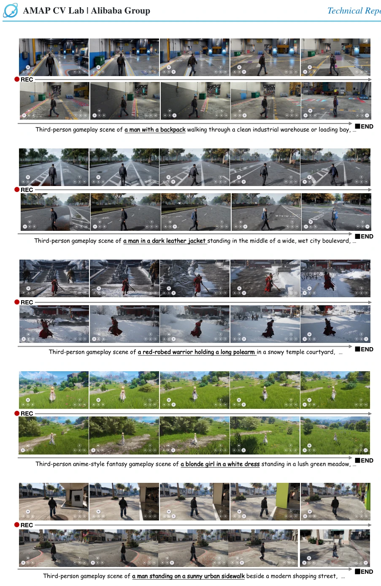
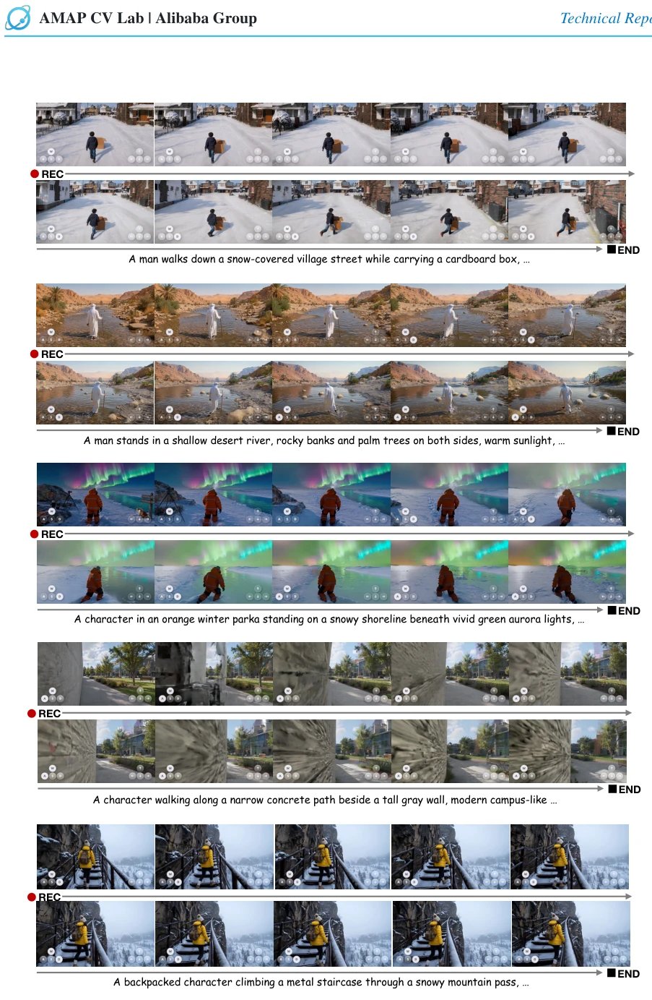

This report brings "World Models" back from the cloud to the desktop; running at 16 FPS on a single RTX 5090 is indeed impressive, but "infinite" rollout sounds like marketing jargon, essentially long-term stability under low VRAM. Data engineering is quite detailed, 14 checks plus VLM filtering, smarter than simply piling up data. However, the risk of style solidification brought by AAA game data is significant, real physical interactions (like [1] GameGAN) still rely on simulation. In terms of model architecture, bidirectional teacher distilling causal student is a routine operation, but LongForcing attempting to solve autoregressive drift counts as a pragmatic patch. Overall, it is a demo where engineering capability exceeds theoretical breakthrough, suitable for local play, still far from general embodied intelligence, and the 2026 hardware assumption makes current reproduction slightly awkward.
Existing video generation models [8-16] mostly focus on static content, lacking interactivity. Genie [2] is playable but difficult to scale. Cosmos [6] etc. explore open worlds, but face four major bottlenecks: data closed-loop, intent representation, history drift, and deployment efficiency. Passive internet videos lack control signals, game data styles are singular, simulation data lacks diversity. Existing systems are often strong in one aspect but cannot serve as local persistent simulators. Need to solve action supervision, state persistence, autoregressive drift, and real-time deployment issues. Especially cumulative errors in long-term generation and identity consistency are hard to maintain, leading to disrupted interaction experience. Additionally, existing methods struggle to achieve low-latency streaming generation on consumer-grade hardware, limiting practical application scenarios.

Figure 1: ABot-World-0 turns a single NVIDIA RTX 5090 GPU into a real-time interactive world simulator, en- abling infinite action-conditioned world rollout at 720P and up to 16 FPS with 1.2 s action-to-first-frame latency within a peak-VRAM budget of approximately 19 GiB.
The overall process is divided into data, training, and inference. The data layer uses WorldExplorer to build a closed loop, integrating AAA games, simulation engines, and internet videos, undergoing 14 checks and VLM evaluation. The training layer adopts progressive distillation from bidirectional teacher to causal student: first use Teacher Forcing and ODE Distillation to convert to causal, then use LongForcing to align long-term distributions. The control layer unifies keyboard input (WASD+IJKL) and character memory. The inference layer optimizes low-bit DiT and streaming decode, achieving single-card real-time interaction. Specifically, action signals are packed as 32-dim tokens injected into DiT, character memory maintains identity consistency through asymmetric attention. The inference stack includes lightweight VAE decoding, KV cache, and memory-aware scheduling, ensuring maintenance of 16 FPS under 19 GiB VRAM.

Figure 2: Data Pipeline Overview. An end-to-end pipeline couples agent-driven and internet-scale collection, multi-stage quality filtering, and structured multimodal annotation. Curated data trains the world model, whose evaluation feeds a training-feedback loop that drives targeted re-collection and continual data refinement.

Figure 3: Overall training pipeline of ABot-World-0. We first adapt a pretrained video generator into a high- quality bidirectional action-conditioned teacher. The teacher is then progressively converted into a causal autore- gressive student through Teacher Forcing, Causal ODE Distillation, and LongForcing, enabling few-step low-latency inference and stable long-horizon interactive rollout.

Figure 4: ABot-World-0 Model Architecture. ABot-World-0 incorporates action control and reference-character memory into a pretrained video DiT. Keyboard actions guide dynamics, while reference images help preserve char- acter identity.
Tested on WorldRoamBench and long-term rollout. Metrics include FVD, action fidelity, long-term stability. Results: 720P 16 FPS under single RTX 5090, first frame latency 1.2s, VRAM 19 GiB. Long-term generation (hour/day level) maintains scene consistency and action coherence. Baseline comparison shows LongForcing effectively reduces drift. Physical interactions like collision, water marks perform reasonably. Figures 5 to 7 show hour-level and day-level generation coherence, Figure 10 compares LongForcing with Causal Forcing baseline, proving its advantage in long-term stability. OOD control generalization ability is also verified in Figure 8, indicating the model can handle unseen scenes and characters.

Figure 5: Hour-scale long-horizon generation examples. Each rollout is shown as a timestamped keyframe strip, demonstrating sustained controllability and scene coherence over one-hour interactive rollouts.

Figure 10: Framewise comparison of our Causal-Forcing-style baseline and LongForcing over 60-second roll- outs. Both variants use student self-rollouts and final-stage DMD; LongForcing additionally uses extended-horizon teacher supervision. The curve labeled Causal Forcing denotes the adapted Causal-Forcing-style baseline used in this report. Higher HPSv3 values are better, while lower values are better for high-saturation pixel ratio, perceptual blur score, and patch repeat ratio. Curves are averaged over the evaluation set.
其他图片Other Figures

Figure 6: Day-scale long-horizon generation examples, Set I. Timestamped keyframes from two day-scale rollout examples show recognizable scene structure, viewpoint consistency, and active motion at sampled checkpoints over extended generation.

Figure 7: Day-scale long-horizon generation examples, Set II. Two additional timestamped rollout examples main- tain recognizable scene structure and active motion at sampled checkpoints under substantial accumulated-error conditions.

Figure 8: Out-of-domain (OOD) control generalization across diverse scenes and controllable characters. Each row presents an interactive rollout in which both the environment and the controllable subject are outside the training distribution. Using a unified action interface, ABot-World-0 generates action-consistent character motion while preserving coherence with the surrounding scene.

Figure 9: Physical-interaction examples. The cases include object collision, water traces, snow tracks, wall block- ing, and collision with a railing without interpenetration.